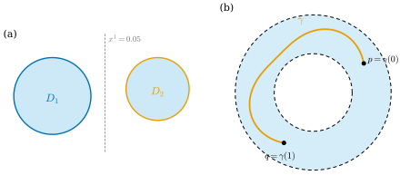
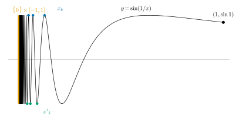

3.7 Connectedness
Goals
- connectedness를 “열려 있으면서 닫힌 부분집합이 \(\varnothing\)과 전체뿐”으로 정의하고, \(\R\)의 connected 부분집합이 구간임을 증명할 수 있다.
- path-connectedness를 정의하고, path-connected이면 connected이지만 역은 거짓임(topologist's sine curve)를 설명할 수 있다.
- connected component를 정의하고, locally path-connected인 공간(예: \(\R^n\)의 open set)에서는 connected와 path-connected가 같음을 증명할 수 있다.
- connectedness를 topological property로 써서 \(\R \not\cong \R^n\) (\(n \ge 2\))을 보이고, locally constant function이 connected space에서 상수임을 증명할 수 있다.
Prerequisites
- Definition 3.1.15 (closed set, closure), Proposition 3.1.17
- Definition 3.2.1 (연속), topological property(Section 3.2)
- Proposition 3.3.4, Lemma 3.3.6 (gluing lemma)
- Proposition 3.4.14, Example 3.6.13 (\(\RP^n\), \(T^2\)의 모형)
Motivation
Section 3.6에서 compactness로 \([0, 1] \not\cong (0, 1)\)을 보였다. 그러나 \(\R\)과 \(\R^2\)는 둘 다 compact하지 않으므로 compactness로는 구별되지 않는다. 둘은 정말 다른가? 직관은 분명하다. \(\R\)에서 한 점을 빼면 두 조각으로 갈라지지만, \(\R^2\)에서 한 점을 빼도 한 조각으로 남는다. 이 “조각의 개수”를 topology의 언어로 옮긴 것이 connectedness이다.
connectedness는 앞으로 여러 곳에서 가정으로 쓰인다. Chapter 10의 surface 분류는 connected compact surface에 대한 것이고, Chapter 19의 \(H^0_{\mathrm{dR}}(M)\)은 \(M\)의 connected component의 개수를 센다. 또 “도함수가 \(0\)이면 상수”는 connected인 정의역에서만 참이다(\(\R \setminus \{0\}\) 위의 부호함수를 생각하자. Corollary 3.7.18). 이 절은 이런 논증의 뼈대를 준비한다.

Connected Spaces
Definition 3.7.1 (connected). topological space \(X\)를 공집합이 아닌 서로소인 두 open set의 합집합 \(X = U \cup V\)로 쓸 수 있으면, 이 쌍 \((U, V)\)를 \(X\)의 separation(분리)라 한다. separation이 없으면 \(X\)를 connected(연결) 공간이라 한다. 부분집합 \(A \subseteq X\)가 subspace로서 connected이면 \(A\)를 connected 부분집합이라 한다.
separation \((U, V)\)에서 \(V = X \setminus U\)이므로 \(U\)는 열려 있으면서 닫혀 있다. 따라서 \(X\)가 connected일 필요충분조건은 열려 있으면서 닫힌 부분집합이 \(\varnothing\)과 \(X\)뿐인 것이다. (공집합은 connected로 본다.)
Example 3.7.2. (a) 한 점 공간은 connected이다. (b) trivial topology를 준 공간은 connected이다. open set이 \(\varnothing\)과 \(X\)뿐이기 때문이다. (c) \(\R\)의 구간은 connected이다(Theorem 3.7.4). 특히 \(\R\) 자신이 connected이다.
Non-example 3.7.3. (a) \(\R \setminus \{0\} = (-\infty, 0) \cup (0, \infty)\)는 connected가 아니다. 두 반직선은 공집합이 아니고 서로소이며 열려 있다.
(b) \(\Q\)는 connected가 아니다. \(U = \Q \cap (-\infty, \sqrt2)\), \(V = \Q \cap (\sqrt2, \infty)\)는 \(\Q\)에서 열려 있고 서로소이며 합집합이 \(\Q\)다(\(\sqrt2 \notin \Q\)).
(c) Figure 3.7.1(a)의 \(A = D_1 \cup D_2\)는 connected가 아니다. \(D_1 = A \cap \{x^1 \lt 0.05\}\)와 \(D_2 = A \cap \{x^1 \gt 0.05\}\)가 \(A\)의 separation이다.
(d) 원소가 둘 이상인 이산공간은 connected가 아니다. 한 점 집합이 열려 있으면서 닫혀 있다.
\(\R\)의 부분집합 \(I\)가 “\(x, y \in I\)이고 \(x \lt z \lt y\)이면 \(z \in I\)”를 만족하면 구간이라 한다. 열린구간, 닫힌구간, 반직선, \(\R\), 한 점, \(\varnothing\)이 모두 구간이다.
Theorem 3.7.4 (connected subsets of \(\R\)). \(A \subseteq \R\)가 connected일 필요충분조건은 \(A\)가 구간인 것이다.
이 theorem이 말하는 것. \(\R\)에서 “한 조각”인 집합은 정확히 구간이다. intermediate value theorem과 “path-connected이면 connected”는 모두 이 theorem에서 나온다.
Proof idea: 구간을 두 열린 조각으로 나눌 수 있다면 한 조각에서 다른 조각으로 넘어가는 “boundary point” \(c = \sup\)를 잡는다. \(c\)가 어느 조각에 속하든 그 조각이 열려 있다는 사실과 모순이다. 이 증명에 실수의 completeness가 쓰인다.
Proof. (\(\Rightarrow\)) \(A\)가 구간이 아니면 \(x, y \in A\), \(x \lt z \lt y\), \(z \notin A\)인 \(x, y, z\)가 있다. 그러면 \(A \cap (-\infty, z)\)와 \(A \cap (z, \infty)\)는 \(A\)에서 열려 있고, 각각 \(x\), \(y\)를 포함하며, 서로소이고, 합집합이 \(A\)다. 따라서 \(A\)는 connected가 아니다.
(\(\Leftarrow\)) \(A\)가 구간이고 \((U, V)\)가 \(A\)의 separation이라고 가정하자. \(a \in U\), \(b \in V\)를 고르고, 필요하면 \(U\)와 \(V\)의 이름을 바꾸어 \(a \lt b\)라 하자. \(A\)가 구간이므로 \([a, b] \subseteq A\)이다. \(c = \sup(U \cap [a, b])\)로 두면 \(a \le c \le b\)이므로 \(c \in A\)이고, \(c \in U\)이거나 \(c \in V\)이다.
- \(c \in U\)인 경우: \(b \in V\)이므로 \(c \lt b\)이다. \(U\)가 \(A\)에서 열려 있으므로 \((c - \varepsilon, c + \varepsilon) \cap A \subseteq U\)인 \(\varepsilon \gt 0\)이 있다. \(\varepsilon \lt b - c\)로 잡으면 \(c + \varepsilon/2 \in [a, b] \subseteq A\)이므로 \(c + \varepsilon/2 \in U \cap [a, b]\)이다. 이것은 \(c\)가 supremum이라는 데 모순이다.
- \(c \in V\)인 경우: \(a \in U\)이므로 \(c \gt a\)이다. \(V\)가 열려 있으므로 \((c - \varepsilon, c + \varepsilon) \cap A \subseteq V\)인 \(\varepsilon\)이 있고, \(\varepsilon \lt c - a\)로 잡으면 \((c - \varepsilon, c] \subseteq V\)이므로 \(U \cap [a, b]\)는 \((c - \varepsilon, c]\)와 만나지 않는다. 그러면 \(c - \varepsilon\)이 \(U \cap [a, b]\)의 upper bound가 되어 \(c\)가 least upper bound라는 데 모순이다.
어느 쪽이든 모순이므로 \(A\)는 connected이다.
Proposition 3.7.5 (continuous image). \(X\)가 connected이고 \(f\colon X \to Y\)가 연속이면 \(f(X)\)는 connected이다. 특히 connectedness는 topological property이다.
Proof. \((U, V)\)가 \(f(X)\)의 separation이라면 \(f^{-1}(U)\), \(f^{-1}(V)\)는 \(X\)에서 열려 있고(Theorem 3.3.5(c)로 \(f\)를 \(f(X)\)로 가는 map으로 본다), 공집합이 아니며, 서로소이고, 합집합이 \(X\)이다. 이것은 \(X\)의 separation이므로 모순이다.
Corollary 3.7.6 (intermediate value theorem). \(X\)가 connected이고 \(f\colon X \to \R\)가 연속이며 \(a, b \in X\), \(f(a) \lt c \lt f(b)\)이면 \(f(x) = c\)인 \(x \in X\)가 있다.
Proof. Proposition 3.7.5에 의해 \(f(X)\)는 \(\R\)의 connected 부분집합이므로 구간이고(Theorem 3.7.4), \(f(a), f(b)\)를 포함하므로 그 사이의 \(c\)도 포함한다.
\(X\)가 \(\R\)의 구간이면(Theorem 3.7.4에 의해 connected) 이것이 미적분학의 intermediate value theorem이다. Chapter 2는 이 사실을 증명 없이 받아들였고 (Section 2.1 준비의 (v)), Chapter 4는 이 corollary를 인용한다.
connected 집합을 합치거나 closure를 취해도 connectedness가 유지된다. 다음 proposition의 (a)가 이후 증명의 핵심 도구다.
Proposition 3.7.7. \(X\)가 topological space라 하자.
- (a) \((U, V)\)가 \(X\)의 separation이고 \(A \subseteq X\)가 connected이면 \(A \subseteq U\)이거나 \(A \subseteq V\)이다.
- (b) connected 부분집합들 \(A_\alpha\)가 모두 한 점 \(p\)를 공유하면 \(\bigcup_\alpha A_\alpha\)는 connected이다.
- (c) \(A\)가 connected이고 \(A \subseteq B \subseteq \overline{A}\)이면 \(B\)는 connected이다. 특히 \(\overline{A}\)는 connected이다.
Proof. (a) \(A \cap U\)와 \(A \cap V\)는 \(A\)에서 열려 있고 서로소이며 합집합이 \(A\)다. \(A\)가 connected이므로 둘 중 하나는 공집합이다.
(b) \(B = \bigcup_\alpha A_\alpha\)의 separation \((U, V)\)가 있다고 하자. \(p \in U\)라 하면, (a)를 subspace \(B\)에 적용해 각 \(A_\alpha\)는 \(U\)나 \(V\)에 들어가는데, \(p \in A_\alpha \cap U\)이므로 \(A_\alpha \subseteq U\)이다. 따라서 \(B \subseteq U\)이고 \(V = \varnothing\)이 되어 모순이다.
(c) \((U, V)\)가 \(B\)의 separation이라 하자. (a)에 의해 \(A \subseteq U\)라 해도 된다. \(V\)는 \(B\)에서 열려 있고 공집합이 아니므로 어떤 점 \(q \in V\)를 포함하며, \(V = W \cap B\)인 \(X\)의 open set \(W\)가 있다. \(q \in \overline{A}\)이므로 Proposition 3.1.17에 의해 \(W\)는 \(A\)의 점을 포함하고, 그 점은 \(W \cap B = V\)에 있다. 그런데 \(A \subseteq U\)이고 \(U \cap V = \varnothing\)이므로 모순이다.
Path-Connectedness
Definition 3.7.8 (path and path-connected). topological space \(X\)의 두 점 \(p, q\)에 대하여 continuous map \(\gamma\colon [0, 1] \to X\)가 \(\gamma(0) = p\), \(\gamma(1) = q\)를 만족하면 \(\gamma\)를 \(p\)에서 \(q\)로 가는 path(경로)라 한다. \(X\)의 모든 두 점 사이에 path가 있으면 \(X\)를 path-connected(경로연결) 공간이라 한다.
path는 연속이기만 하면 되고 매끄러울 필요가 없다. path로 이어진다는 관계는 equivalence relation이다. \(p\)에서 \(p\)로는 상수 path가 있고, \(\gamma\)를 거꾸로 따라간 \(\bar\gamma(t) = \gamma(1 - t)\)는 \(q\)에서 \(p\)로 가는 path이며, \(\gamma\)(\(p\)에서 \(q\)로)와 \(\eta\)(\(q\)에서 \(r\)로)를 이어 붙인
는 \(p\)에서 \(r\)로 가는 path다. 두 식은 \(t = 1/2\)에서 모두 \(q\)이고, 닫힌 두 조각 \([0, \tfrac12]\), \([\tfrac12, 1]\)에서 각각 연속이므로 gluing lemma(Lemma 3.3.6)에 의해 연속이다.
Proposition 3.7.9. path-connected 공간은 connected이다. path-connected 공간의 continuous image는 path-connected이다.
Proof. \(X\)가 path-connected이고 공집합이 아니라 하자. 한 점 \(p\)를 고정하고 각 \(q\)에 대해 \(p\)에서 \(q\)로 가는 path \(\gamma_q\)를 고른다. \(\gamma_q([0, 1])\)은 connected인 \([0, 1]\)(Theorem 3.7.4)의 continuous image이므로 connected이고(Proposition 3.7.5), 모두 \(p\)를 포함하며, 합집합이 \(X\)다. Proposition 3.7.7(b)에 의해 \(X\)는 connected이다. \(f\colon X \to Y\)가 연속이면 \(f(x)\)와 \(f(x')\)은 path \(f \circ \gamma\)로 이어진다.
Example 3.7.10 (path-connected space). (a) \(\R^n\)의 convex set \(C\)(두 점을 잇는 선분을 포함하는 집합)는 path-connected이다. \(p, q \in C\)이면
이 \(C\) 안의 path다. open ball, closed ball, \(\R^n\), box \([0, 1]^2\)가 여기에 속한다.
(b) \(n \ge 2\)이면 \(\R^n \setminus \{0\}\)은 path-connected이다. \(p, q \ne 0\)을 잇는 선분 (3.7.2)가 원점을 지나지 않으면 그것을 쓴다. 지나면 \(p\)와 \(q\)는 원점을 지나는 한 직선 위에 있다. \(n \ge 2\)이므로 그 직선 밖의 점 \(r\)을 고를 수 있고, 두 선분 \([p, r]\), \([r, q]\)는 원점을 지나지 않는다(원점을 지나면 \(r\)이 그 직선 위에 있게 된다). 두 선분을 (3.7.1)로 이어 붙인다.
(c) \(n \ge 1\)이면 \(S^n\)은 path-connected이다. \(\rho(x) = x/\abs{x}\)는 \(\R^{n+1} \setminus \{0\}\)에서 \(S^n\) 위로 가는 연속 surjective이고, (b)에 의해 정의역이 path-connected이다(\(n + 1 \ge 2\)). Proposition 3.7.9를 쓴다.
(d) \(n \ge 1\)이면 \(\RP^n\)은 path-connected이다. \(S^n\)의 continuous image이다(Proposition 3.4.14). torus \(T^2\)와 torus of revolution \(T_{R,r}\)는 path-connected인 \([0, 1]^2\)의 continuous image이다(Example 3.6.13).
(e) 반면 \(\GL(n, \R)\)은 connected가 아니다. \(\det\colon \GL(n, \R) \to \R\)는 연속이고, \(\det I = 1 \gt 0\), \(\det\diag(-1, 1, \dots, 1) = -1 \lt 0\)이다. \(\GL(n, \R)\)이 connected라면 intermediate value theorem에 의해 \(\det A = 0\)인 \(A \in \GL(n, \R)\)가 있어야 하는데, 이것은 불가능하다. 즉 \(\{\det \gt 0\}\)과 \(\{\det \lt 0\}\)이 separation이다.
Verification: verify/v-3-7-connectedness.py
Non-example 3.7.11 (topologist's sine curve: connected but not path-connected). \(A = \{(x, \sin(1/x)) : 0 \lt x \le 1\}\)과 \(T = A \cup (\{0\} \times [-1, 1]) \subseteq \R^2\)라 하자(Figure 3.7.2).
- \(T\)는 connected이다. \(A\)는 connected인 \((0, 1]\)의 continuous image \(x \mapsto (x, \sin(1/x))\)이므로 connected이다. \(T = \overline{A}\)임을 보이면 Proposition 3.7.7(c)에 의해 \(T\)는 connected이다. \(\abs{y_0} \le 1\)이면 \(x_k = 1/(\arcsin y_0 + 2\pi k)\)가 \(0\)으로 가고 \(\sin(1/x_k) = y_0\)이므로 \((x_k, y_0) \to (0, y_0)\)이다. 따라서 \(\{0\} \times [-1, 1] \subseteq \overline{A}\)이다. 거꾸로 \((x_0, y_0) \in \overline{A}\)이면 \(A\)의 점 \((x_k, \sin(1/x_k)) \to (x_0, y_0)\)이 있다(Proposition 3.2.17(c)). \(x_0 \in [0, 1]\)이고, \(x_0 \gt 0\)이면 \(\sin(1/x)\)의 연속성에서 \(y_0 = \sin(1/x_0)\)이며, \(x_0 = 0\)이면 \(\abs{y_0} \le 1\)이다. 따라서 \(\overline{A} \subseteq T\)이다.
- \(T\)는 path-connected가 아니다. \((0, 0)\)에서 \((1, \sin 1)\)로 가는 path \(\gamma = (\gamma^1, \gamma^2)\)가 있다고 하자. \(F = \gamma^{-1}(\{0\} \times [-1, 1])\)은 closed set의 preimage이므로 \([0, 1]\)의 closed set이고 \(0\)을 포함한다. \(t_0 = \max F\)로 두면 \(t_0 \lt 1\)이고, \(t \gt t_0\)이면 \(\gamma(t) \in A\), 즉 \(\gamma^1(t) \gt 0\)이다. \(\gamma^2\)는 \(t_0\)에서 연속이므로 \([t_0, t_0 + \delta]\)에서 \(\abs{\gamma^2(t) - \gamma^2(t_0)} \lt 1/2\)인 \(\delta\) (\(0 \lt \delta \le 1 - t_0\))가 있다. 한편 \(\gamma^1([t_0, t_0 + \delta])\)는 connected이므로 구간이고, \(\gamma^1(t_0) = 0\)과 \(\gamma^1(t_0 + \delta) \gt 0\)을 포함한다. 따라서 이 구간은 충분히 큰 \(k\)에 대한 \(1/(\pi/2 + 2\pi k)\)와 \(1/(3\pi/2 + 2\pi k)\)를 모두 포함하고, 그 값을 갖는 \(t\)는 \((t_0, t_0 + \delta]\)에 있고(\(\gamma^1(t_0) = 0\)이므로) 거기서 \(\gamma(t) \in A\)이므로 \(\gamma^2(t) = 1\)과 \(\gamma^2(t) = -1\)이 모두 나타난다. \(1\)과 \(-1\)이 둘 다 \(\gamma^2(t_0)\)에서 \(1/2\)보다 가까울 수는 없으므로 모순이다.
Verification: verify/v-3-7-connectedness.py

Connected Components and Local Path-Connectedness
Definition 3.7.12 (connected component). topological space \(X\)의 점 \(p\)를 포함하는 모든 connected 부분집합의 합집합을 \(p\)의 connected component(연결성분)이라 한다. 마찬가지로 \(p\)와 path로 이어지는 점 전체를 \(p\)의 path component(경로성분)이라 한다.
Proposition 3.7.13 (properties of connected components).
- (a) 각 connected component는 connected이고, \(X\)의 connected 부분집합은 하나의 connected component에 들어간다. 즉 connected component는 극대 connected 부분집합이다.
- (b) 서로 다른 두 connected component는 서로소이고, connected component들의 합집합은 \(X\)다.
- (c) 각 connected component는 닫혀 있다.
Proof. (a) \(p\)의 connected component \(C_p\)는 \(p\)를 공유하는 connected set들의 합집합이므로 Proposition 3.7.7(b)에 의해 connected이다. \(p\)를 포함하는 connected set은 정의상 \(C_p\)에 들어간다. (b) \(q \in C_p \cap C_{p'}\)이면 \(C_p \cup C_{p'}\)은 \(q\)를 공유하는 두 connected set의 합집합이므로 connected이고 \(p\)를 포함하므로 \(C_p\)에 들어간다. 즉 \(C_{p'} \subseteq C_p\)이고, symmetry로 \(C_p \subseteq C_{p'}\)이다. \(p \in C_p\)(한 점은 connected)이므로 합집합은 \(X\)다. (c) Proposition 3.7.7(c)에 의해 \(\overline{C_p}\)는 connected이고 \(p\)를 포함하므로 \(\overline{C_p} \subseteq C_p\)이다.
connected component는 닫혀 있지만 열려 있지 않을 수 있다. \(\Q\)의 connected component는 한 점 집합들이고(connected 부분집합이 구간이면서 유리수로만 이루어져야 하므로), 이것은 \(\Q\)에서 열려 있지 않다. 다음 조건이 있으면 이런 일이 일어나지 않는다.
Definition 3.7.14 (locally path-connected). topological space \(X\)의 모든 점 \(p\)와 \(p\)의 모든 neighborhood \(U\)에 대하여, \(U\) 안에 path-connected인 \(p\)의 neighborhood가 있으면 \(X\)를 locally path-connected(국소 경로연결) 공간이라 한다.
\(\R^n\)의 open set \(W\)는 locally path-connected이다. \(p\)의 neighborhood \(U \subseteq W\) 안에 ball \(B_\varepsilon(p)\)가 있고, ball은 convex하므로 path-connected이다(Example 3.7.10(a)). 같은 이유로 \(S^n\)이나 \(\RP^n\)처럼 “모든 점이 \(\R^n\)과 homeomorphic인 neighborhood를 갖는” 공간도 locally path-connected이다(그 neighborhood 안의 ball의 image를 쓴다). 반면 topologist's sine curve \(T\)는 \((0, 0)\) 근처에서 locally path-connected가 아니다(Non-example 3.7.11의 논증을 작은 ball 안에서 되풀이하면 보인다).
Theorem 3.7.15. \(X\)가 locally path-connected라 하자. 그러면 path component들은 열려 있으면서 닫혀 있고, connected component와 path component는 같다. 특히 \(X\)가 connected일 필요충분조건은 \(X\)가 path-connected인 것이다.
이 theorem이 말하는 것. \(\R^n\)의 open set이나 앞으로 다룰 manifold에서는 “connected”를 확인할 때 path로 이어 보면 된다.
Proof idea: 한 점 근처의 path-connected neighborhood는 통째로 그 점의 path component에 속한다. 그래서 path component는 열려 있고, 그 여집합(다른 path component들의 합집합)도 열려 있다.
Proof. \(P\)가 path component이고 \(q \in P\)라 하자. \(X\)를 neighborhood로 보고 Definition 3.7.14를 쓰면 path-connected인 \(q\)의 neighborhood \(W\)가 있다. \(W\)의 각 점은 \(q\)와 path로 이어지고, \(q\)는 \(P\)의 기준점과 이어지므로, path를 이어 붙이면((3.7.1)) \(W \subseteq P\)이다. 따라서 \(P\)는 열려 있다. \(X \setminus P\)는 다른 path component들의 합집합이므로 역시 열려 있고, 따라서 \(P\)는 닫혀 있다.
\(p\)의 path component \(P\)와 connected component \(C\)를 비교하자. \(P\)는 path-connected이므로 connected이고(Proposition 3.7.9) \(p\)를 포함하므로 \(P \subseteq C\)이다. \(P\)는 \(X\)에서 열려 있으면서 닫혀 있으므로 \(C\)에서도 열려 있으면서 닫혀 있고(Proposition 3.3.4), 공집합이 아니다. \(C\)가 connected이므로 \(P = C\)이다. \(X\)가 connected이면 \(X\) 자신이 하나의 connected component이므로 하나의 path component이다.
connectedness는 “locally 참인 것이 globally 참”이 되게 해 준다. 다음 proposition이 그 전형이다.
Proposition 3.7.16 (locally constant function). \(X\)가 connected이고 \(f\colon X \to Y\)가 locally constant, 즉 모든 점이 \(f\)가 상수인 neighborhood를 가진다고 하자(\(Y\)는 임의의 집합). 그러면 \(f\)는 상수다.
Proof. \(X \ne \varnothing\)이라 하고 \(p \in X\), \(c = f(p)\)로 두자. \(E = f^{-1}(c)\)는 \(p\)를 포함한다. \(x \in E\)이면 \(f\)가 상수인 neighborhood가 \(E\)에 들어가므로 \(E\)는 열려 있다. \(x \notin E\)이면 \(f\)가 상수 \(f(x) \ne c\)인 neighborhood가 \(X \setminus E\)에 들어가므로 \(X \setminus E\)도 열려 있다. \(X\)가 connected이므로 \(E = X\)이다.
Example 3.7.17 (\(\R \not\cong \R^n\), \(n \ge 2\)). homeomorphism \(h\colon \R \to \R^n\)이 있다고 하자. \(h\)를 \(\R \setminus \{0\}\)으로 제한하면 \(\R \setminus \{0\}\)에서 \(\R^n \setminus \{h(0)\}\)로 가는 homeomorphism이다 (restriction과 inverse map의 restriction이 모두 연속, Theorem 3.3.5). 그런데 \(\R^n \setminus \{h(0)\}\)은 이동으로 \(\R^n \setminus \{0\}\)과 homeomorphic이므로 path-connected이고(Example 3.7.10(b)) 따라서 connected이며, \(\R \setminus \{0\}\)은 connected가 아니다(Non-example 3.7.3(a)). connectedness는 topological property이므로(Proposition 3.7.5) 모순이다. 같은 방법으로 \(S^1 \not\cong [0, 1]\)이다. \([0, 1]\)에서 \(1/2\)을 빼면 connected가 아니지만, \(S^1\)에서 어느 한 점 \(p\)를 빼도, \(p\)를 북극으로 보내는 회전(homeomorphism)과 stereographic projection(Example 3.2.14(c))을 합성하면 \(S^1 \setminus \{p\} \cong \R\)이므로 connected이다.
마지막으로 동기에서 말한 “도함수가 \(0\)이면 상수”를 connectedness로 정확히 진술하고 증명한다.
Corollary 3.7.18 (\(DF = 0\) on a connected open set implies constant). \(U \subseteq \R^n\)이 connected인 open set이고 \(F\colon U \to \R^m\)이 \(U\)에서 미분가능하며 모든 \(x \in U\)에서 \(DF(x) = 0\)이면 \(F\)는 \(U\)에서 상수다.
Proof idea: 미분은 “각 ball 위에서 상수”라는 local 정보만 준다. 그것을 \(U\) 전체로 잇는 것은 connectedness이다.
Proof. \(p \in U\)라 하자. \(U\)가 open set이므로 \(B_r(p) \subseteq U\)인 \(r \gt 0\)이 있고, Corollary 2.2.10에 의해 \(F\)는 \(B_r(p)\)에서 상수다. \(B_r(p)\)는 \(\R^n\)의 open set이고(Lemma 3.1.6) \(U\)에 포함되므로 subspace \(U\)에서도 열려 있다. 즉 \(B_r(p)\)는 \(U\)에서 \(p\)의 neighborhood이다. 따라서 \(F\)는 locally constant이고, \(U\)가 connected이므로 Proposition 3.7.16에 의해 상수다.
connected라는 가정은 뺄 수 없다. \(\R \setminus \{0\}\)에서 \(x \gt 0\)이면 \(1\), \(x \lt 0\)이면 \(-1\)인 함수는 도함수가 \(0\)이지만 상수가 아니다. 또 Theorem 3.7.15에 의해 connected인 open set은 path-connected이므로, 이 corollary의 가정은 “\(U\)의 두 점이 \(U\) 안의 path로 이어진다”로 확인해도 된다.
Summary
- connected space에는 열려 있으면서 닫힌 부분집합이 \(\varnothing\)과 전체뿐이다. \(\R\)의 connected 부분집합은 정확히 구간이다(Theorem 3.7.4).
- connectedness는 continuous image로 보존되고(intermediate value theorem), 한 점을 공유하는 합집합과 closure로도 보존된다.
- path-connected이면 connected이다. convex set, \(\R^n \setminus \{0\}\) (\(n \ge 2\)), \(S^n\), \(\RP^n\), \(T^2\)는 path-connected이고, \(\GL(n, \R)\)은 connected가 아니다. topologist's sine curve는 connected이지만 path-connected가 아니다.
- connected component는 극대 connected 부분집합이다. locally path-connected 공간(예: \(\R^n\)의 open set)에서는 connected component가 열려 있고 path component와 같다(Theorem 3.7.15).
- connected space 위의 locally constant function은 상수다. 특히 connected인 open set \(U \subseteq \R^n\)에서 \(DF = 0\)이면 \(F\)는 상수다(Corollary 3.7.18). connectedness로 \(\R \not\cong \R^n\) (\(n \ge 2\))을 보인다.
다음 장에서는 이 장의 도구를 들고 곡선의 기하로 들어간다. parametrized curve의 속도와 arc length를 정의하고, 곡선이 얼마나 휘었는지를 재는 curvature를 도입한다. 이 장의 subspace topology와 homeomorphism, compactness와 connectedness는 Chapter 6의 regular surface에서 본격적으로 쓰인다.
Exercises
Exercise 3.7.1 ★ 다음 집합이 connected인지 판별하여라. (a) \([0, 1] \cup [2, 3]\) (b) \(S^1\) (c) 쌍곡선 \(\{xy = 1\}\) (d) 두 좌표축의 합집합 \(\{xy = 0\}\) (e) \(\R^2 \setminus \{(x, 0) : x \in \R\}\)
Solution
(a) 아니다. 구간이 아니다(Theorem 3.7.4). (b) connected(Example 3.7.10(c)). (c) 아니다. \(\{x \gt 0\}\)과 \(\{x \lt 0\}\)으로 자른 두 가지가 separation이다(곡선 위에서 \(x \ne 0\)). (d) connected. 두 축은 각각 connected(직선)이고 원점을 공유한다(Proposition 3.7.7(b)). (e) 아니다. 윗반평면 \(\{y \gt 0\}\)과 아랫반평면 \(\{y \lt 0\}\)이 separation이다.
Exercise 3.7.2 ★ \(x^3 - 3x + 1 = 0\)이 \((0, 1)\)과 \((1, 2)\)에서 각각 해를 가짐을 intermediate value theorem으로 보여라.
Solution
\(p(x) = x^3 - 3x + 1\)은 연속이다. \(p(0) = 1 \gt 0\), \(p(1) = -1 \lt 0\), \(p(2) = 3 \gt 0\)이다. \([0, 1]\)과 \([1, 2]\)는 connected이므로 Corollary 3.7.6에 의해 \(p(x_1) = 0\)인 \(x_1 \in (0, 1)\)과 \(p(x_2) = 0\)인 \(x_2 \in (1, 2)\)가 있다(끝점에서는 \(0\)이 아니므로 열린구간 안).
Verification: verify/v-3-7-connectedness.py
Exercise 3.7.3 ★ \([0, 1) \not\cong (0, 1)\)임을 한 점을 빼는 방법으로 보여라.
Solution
homeomorphism \(h\colon [0, 1) \to (0, 1)\)이 있다고 하자. \([0, 1) \setminus \{0\} = (0, 1)\)은 connected이다. 그러면 \((0, 1) \setminus \{h(0)\}\)도 connected이어야 한다(Example 3.7.17과 같은 논증). 그러나 \((0, 1)\)에서 어느 점 \(c\)를 빼도 \((0, c) \cup (c, 1)\)은 구간이 아니므로 connected가 아니다. 모순이다.
Exercise 3.7.4 ★ 다음 공간의 connected component를 구하여라. (a) 쌍곡선 \(\{xy = 1\}\) (b) \(\GL(1, \R) = \R \setminus \{0\}\) (c) \(\Z \subseteq \R\)
Solution
(a) 두 가지 \(\{xy = 1, x \gt 0\}\), \(\{xy = 1, x \lt 0\}\). 각각 connected인 \((0, \infty)\)(또는 \((-\infty, 0)\))의 continuous image \(x \mapsto (x, 1/x)\)이고, 둘은 서로소인 open set이므로 더 큰 connected set은 없다(Proposition 3.7.7(a)). (b) \((-\infty, 0)\)과 \((0, \infty)\). (c) 한 점 집합들. \(\Z\)는 이산공간이다.
Exercise 3.7.5 ★★ \(f\colon S^1 \to \R\)이 연속이면 \(f(x) = f(-x)\)인 \(x \in S^1\)이 있음을 보여라.
Hint
\(g(x) = f(x) - f(-x)\)는 \(g(-x) = -g(x)\)를 만족한다.
Solution
\(g(x) = f(x) - f(-x)\)는 연속이다(\(x \mapsto -x\)가 연속). 한 점 \(x_0\)을 고르자. \(g(x_0) = 0\)이면 끝이다. 아니면 \(g(-x_0) = -g(x_0)\)는 \(g(x_0)\)와 부호가 반대다. \(S^1\)은 connected이므로(Example 3.7.10(c)) intermediate value theorem에 의해 \(g(x) = 0\), 즉 \(f(x) = f(-x)\)인 \(x\)가 있다. (예: 적도 위의 온도가 연속이면 대척점에서 온도가 같은 두 점이 있다.)
Exercise 3.7.6 ★★ \(X\)와 \(Y\)가 connected이면 \(X \times Y\)도 connected임을 보여라.
Hint
한 점 \((x_0, y_0)\)을 고정하고, 각 \((x, y)\)에 대해 \(X \times \{y_0\} \cup \{x\} \times Y\)를 본다.
Solution
\(X, Y\)가 공집합이 아니라 하자(아니면 곱이 공집합). \(x \mapsto (x, y_0)\)과 \(y \mapsto (x, y)\)는 연속이므로(Theorem 3.3.15(b)) \(X \times \{y_0\}\)과 \(\{x\} \times Y\)는 connected이고, 점 \((x, y_0)\)을 공유하므로 \(L_{x} = (X \times \{y_0\}) \cup (\{x\} \times Y)\)는 connected이다(Proposition 3.7.7(b)). 모든 \(L_x\)는 \((x_0, y_0)\)을 포함하고 합집합이 \(X \times Y\)이므로 다시 Proposition 3.7.7(b)에 의해 \(X \times Y\)는 connected이다.
Exercise 3.7.7 ★★★ \(\R^2 \setminus \Q^2\) (적어도 한 좌표가 무리수인 점 전체)가 path-connected임을 보여라.
Hint
\(a\)가 무리수이면 세로선 \(\{x = a\}\) 전체가 이 집합에 들어 있고, \(b\)가 무리수이면 가로선 \(\{y = b\}\) 전체가 들어 있다.
Solution
\(Z = \R^2 \setminus \Q^2\)라 하자. 무리수 \(a\)에 대한 세로선 \(V_a = \{a\} \times \R\)과 무리수 \(b\)에 대한 가로선 \(H_b = \R \times \{b\}\)는 \(Z\)에 들어 있고 각각 path-connected이다(선분). \(V_a \cap H_b = \{(a, b)\}\)이므로 모든 \(V_a\)와 모든 \(H_b\)는 서로 path로 이어진다: \(V_a\)의 점에서 \((a, b)\)를 거쳐 \(H_b\)의 점으로 간다. 두 세로선 \(V_a, V_{a'}\)도 \(H_{\sqrt2}\)를 거쳐 이어지고, 두 가로선도 같다. \(Z\)의 모든 점 \((x, y)\)는 \(x\)가 무리수이면 \(V_x\)에, \(y\)가 무리수이면 \(H_y\)에 있다. 따라서 \(Z\)의 두 점은 각자의 선을 따라 \(V\)나 \(H\) 하나로 가고, 그 선들 사이를 위와 같이 이어 붙여((3.7.1)) path로 이어진다. (\(\Q^2\)는 countable이지만 dense하다. 그래도 평면에서 빼면 connected가 유지된다.)